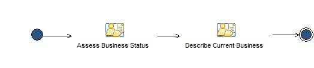

Итерация: Inception Iteration [n]
This iteration covers the Inception related activities.
Описание
Структура работы
Распределение групп
Использование рабочего продукта
Поток операций

Структура
© Copyright IBM Corp. 1987, 2006. Все права защищены..